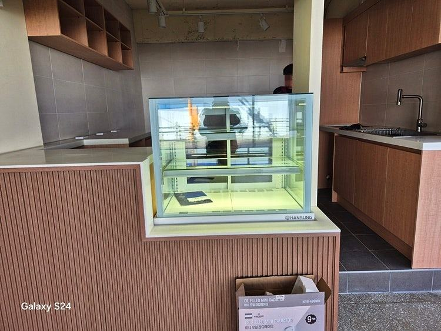
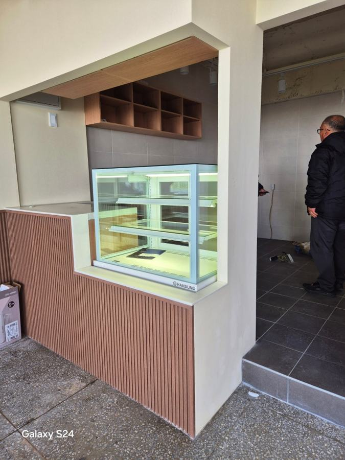
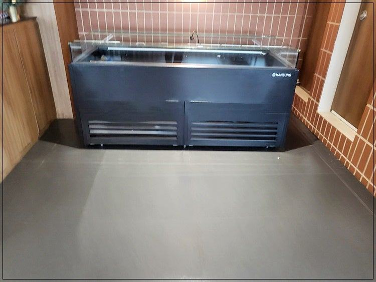
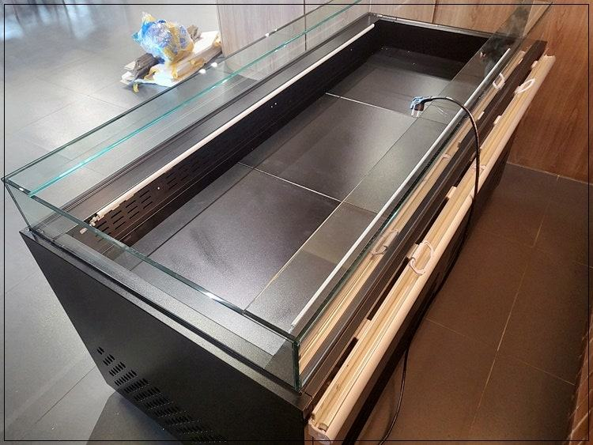
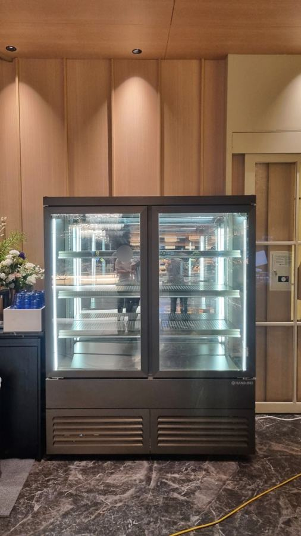
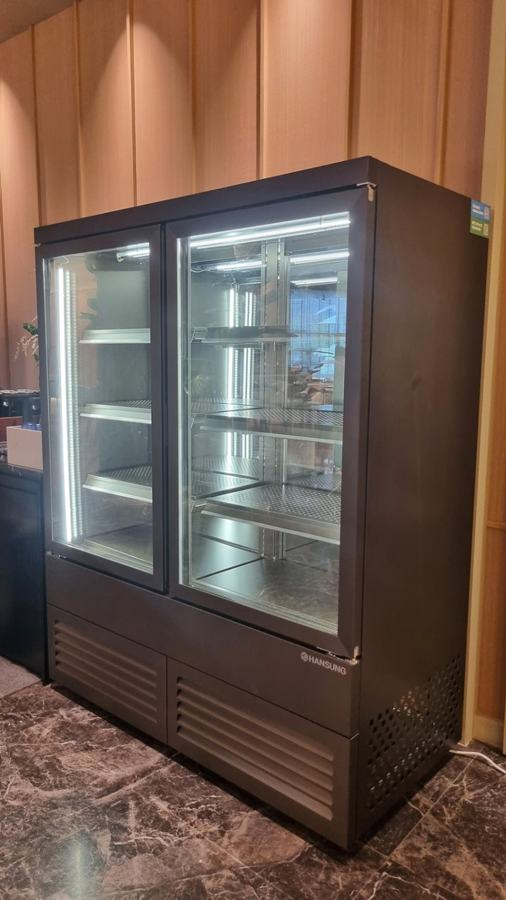

한성제품
편의점 창업비용, 냉장 집기 예산을 짜는 순서

편의점 창업비용 중 냉장 집기는 상품 구역을 먼저 나누고 매장 벽면 길이에 맞춰 대수를 정하면 낭비가 줄어듭니다. 특히 개인 편의점은 기성 규격이 벽에 맞지 않는 경우가 많아, 맞춤 제작과 A/S 체계까지 함께 비교해 보시는 게 좋습니다.
안녕하세요. 편의점과 동네 마트에 들어가는 쇼케이스를 공장에서 직접 만드는 한성쇼케이스입니다.
요즘은 프랜차이즈 대신 개인 브랜드로 편의점이나 소형 마트를 여시는 사장님도 많습니다. 본사 집기를 그대로 받는 구조가 아니다 보니, 냉장 쇼케이스를 몇 대, 어떤 크기로 들여야 하는지부터 직접 정하셔야 하죠.
편의점은 음료, 유제품, 도시락, 아이스크림까지 온도가 다른 상품을 한 공간에서 파는 업종이라 냉장 집기가 창업비용에서 차지하는 비중이 작지 않습니다.
오늘은 개인 편의점을 기준으로 냉장 집기 예산을 어떤 순서로 짜면 좋은지 정리해 보겠습니다.
1. 상품 구역부터 나누기
냉장 집기를 고르기 전에 무엇을 얼마나 팔지부터 적어 보세요. 음료와 주류처럼 회전이 빠른 상품, 우유·요구르트 같은 유제품, 삼각김밥·도시락 같은 간편식은 진열 방식과 필요한 온도대가 다릅니다.
구역을 먼저 나누면 같은 냉장고를 여러 대 두는 대신, 음료는 도어형 워크인 쪽으로 몰고 간편식은 오픈형으로 빼는 식의 배치가 보입니다.
겨울철 캔커피나 두유를 팔 계획이라면 온장고 자리도 이때 함께 잡아 두셔야 합니다.
- 음료·유제품·간편식·냉동 상품 비중을 적어 보세요.
- 온장고가 필요한 계절 상품이 있는지 정하세요.
- 상품을 채우는 동선이 앞쪽인지 뒤쪽인지 확인하세요.
2. 벽면 길이에 맞춘 크기
개인 편의점은 기존 상가를 고쳐 쓰는 경우가 많아 기둥, 창문, 배전반 때문에 벽면이 애매하게 남곤 합니다.
기성품은 크기가 정해져 있어 끝에 손바닥 몇 개만큼의 틈이 생기고, 그 자리는 결국 먼지와 박스가 쌓이는 곳이 됩니다.
벽 길이에 맞춰 쇼케이스를 만들면 같은 벽에서 진열 칸을 더 확보할 수 있습니다. 작은 매장일수록 이 차이가 크게 느껴집니다.
실측할 때는 폭만 재지 마시고 천장 높이와 통로 폭도 함께 확인해 주세요. 손님 두 명이 엇갈려 지나갈 수 있어야 계산대 앞이 막히지 않고, 오픈형 쇼케이스를 통로 쪽에 두면 앞으로 튀어나오는 깊이만큼 동선이 좁아집니다.
출입문 폭은 반입할 수 있는 크기를 정하는 기준이 되니 빠뜨리지 마세요.


3. 직접 만드는 곳인지 확인하기
견적을 받을 때는 판매만 하는 곳인지, 공장을 두고 직접 만드는 곳인지 확인해 보세요. 제작부터 판매까지 한곳에서 하면 중간 유통 단계가 줄어 맞춤 제작이라도 금액을 맞추기 수월합니다.
또 한 가지는 수정이 가능한 범위입니다. 매장 인테리어 색에 맞춘 프레임, 상품 높이에 맞춘 선반 간격처럼 세부 조정이 되는지에 따라 진열 효율이 달라집니다.
4. 24시간 매장일수록 A/S가 비용입니다
편의점은 밤에도 불이 켜져 있는 매장이 많아 냉장고가 쉬는 시간이 거의 없습니다. 한밤중에 음료 냉장고가 멈추면 아침까지 상품을 꺼내 둘 곳도 마땅치 않죠.
그래서 고장 났을 때 얼마나 빨리 와 줄 수 있는지가 곧 운영비입니다. 한성쇼케이스는 전국 240여 개 A/S 센터를 운영하고 있어, 견적 단계에서 매장 위치 기준으로 접수 방법을 안내해 드립니다.
- A/S 접수 경로와 출동 범위를 미리 물어보세요.
- 콤프레셔 종류를 견적서에 적어 달라고 하세요.
체크리스트
- 상품 구역별 비중과 필요한 온도대
- 온장고 포함 여부
- 벽면 실측과 기둥·배전반 위치
- 직접 제작 여부와 수정 가능한 범위
- A/S 접수 경로와 콤프레셔 종류
현장에서 자주 보는 경우: 기성 냉장고 크기가 매장 벽과 맞지 않을 때
요즘 편의점은 인테리어도 다양해지고 파는 식품 종류도 많아져, 냉장 집기를 고르는 일이 예전보다 까다롭습니다.
그런데 기성품 대부분은 크기와 모양이 비슷해 매장에 딱 맞는 것을 찾지 못하고 상담을 주시는 사장님이 많습니다.
이럴 때는 매장 크기에 맞춰 사이즈와 디자인을 정해 제작하는 방법이 있습니다. 한성쇼케이스는 제조공장을 직접 운영해 유통 마진 없이 제작하고, 설치 뒤에도 문제없이 쓰고 계신지 확인하며 A/S가 필요하면 바로 연결해 드립니다.
A/S를 제때 받지 못해 매출에 타격을 입는 일을 줄이려면 처음 고를 때부터 사후 관리 체계를 함께 보셔야 합니다.





자주 묻는 질문
개인 편의점도 프랜차이즈처럼 냉장 집기를 한 번에 맞출 수 있나요?
가능합니다. 매장 도면이나 사진, 팔 상품 구성을 알려 주시면 음료·유제품·간편식 구역에 맞춰 필요한 쇼케이스 구성을 함께 잡아 드립니다.
작은 매장인데 맞춤 제작이 오히려 부담되지 않을까요?
작은 매장일수록 벽면을 남김없이 쓰는 게 중요해 맞춤 제작의 이점이 큽니다. 꼭 필요한 대수와 옵션만 정리해 상담하시면 예산 안에서 구성을 맞출 수 있습니다.
온장고도 같이 만들 수 있나요?
네, 매장 구조에 맞춘 온장고도 제작합니다. 냉장 쇼케이스와 같은 라인으로 맞추면 진열대가 깔끔하게 이어집니다.
매장 조건에 맞춰 만드는 한성쇼케이스
원하시는 제품 사진과 설치할 공간 사진만 보내 주셔도 매장에 맞는 구성을 추천해 드립니다.
- 전국 240여 개 A/S 전담 센터 운영
- 본사 대량 자재 매입으로 품질 대비 합리적인 가격
- 유럽제·삼성 냉각 콤프레셔 적용
- 국내 최초 쇼케이스 전문 디자이너 상주
매장 폭과 원하는 진열 구성을 알려 주세요. 실측과 견적을 안내해 드립니다.
031-986-2458